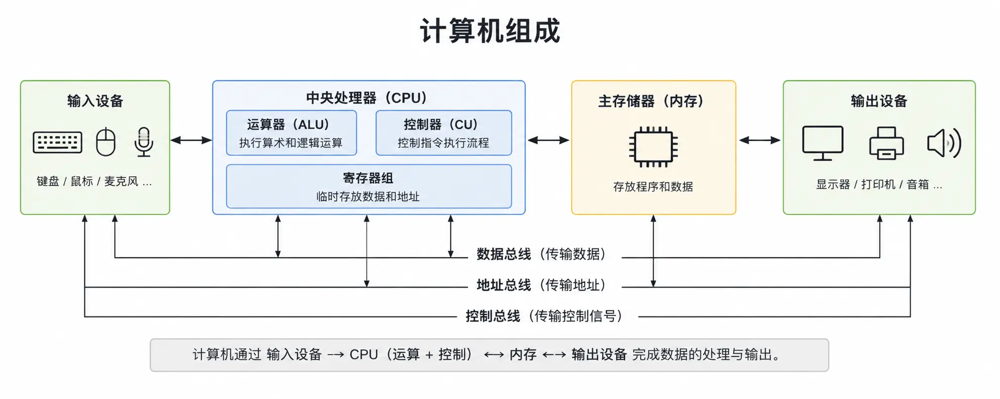

Principles of Computer Organization
Computer Organization (Principles of Computer Organization) is one of the core courses in the Computer Science and Technology major.
Computer organization primarily studies the composition and working principles of the various hardware components inside a computer system, as well as how they coordinate to complete program execution.
By studying computer organization principles, you will understand why the CPU can execute programs, how memory stores data, how instructions run, and the entire process of a computer from power-on to running a program.
This tutorial uses a large number of examples and diagrams to help readers build a complete foundational knowledge system of computer internals, laying a solid foundation for learning courses such as operating systems, compiler principles, databases, and computer networks.
What are the Principles of Computer Organization?
Computer organization principles mainly study the composition structure and working mechanisms of computer hardware systems. It sits between digital circuits and computer architecture and is an important foundation for understanding the operating mechanisms of modern computers.
It focuses on how the various components of a computer work together, including core components such as the central processing unit (CPU), memory, input/output devices, buses, and controllers.
- Understand the internal hardware structure of computers
- Master the execution process of programs in a computer
- Learn the working principles of core components such as CPU, memory, and bus.
- Understand key technologies such as instruction set, pipeline, interrupt, and Cache.
- Lay the foundation for studying operating systems, compiler principles, and embedded development.
Who is this tutorial for?
This tutorial is suitable for students majoring in computer-related fields and developers who wish to gain a deep understanding of the underlying principles of computers.
- Students majoring in computer science and technology
- Software Development Engineers
- For learners preparing for postgraduate entrance exams, civil service exams, or computer grade exams.
- For developers who wish to gain an in-depth understanding of the working mechanisms of CPU and memory.
- For engineers engaged in operating systems, compilers, and embedded development.
Prerequisites for this tutorial
Before studying this tutorial, it is recommended to have some basic computer knowledge, which will help you better understand computer hardware systems.
- Computer Fundamentals
- C language or Python basics
- Binary, decimal, and hexadecimal representation methods.
- Basic digital logic fundamentals (an understanding is sufficient).
- Ability to use a computer proficiently for program development.
Computer System Components
A complete computer system usually consists of a hardware system and a software system, where the hardware system mainly includes the following parts:
计算机系统
│
┌────────────┴────────────┐
│ │
硬件系统 软件系统
│
┌──────┼──────────────┐
│ │ │ │
CPU 存储器 输入设备 输出设备
│
├── 运算器(ALU)
├── 控制器(CU)
└── 寄存器(Register)

A First Example of Computer Organization
The following is a simple C program. It appears to be only one line of code, but inside the computer it goes through multiple processes such as compilation, loading, fetch, decoding, and execution.
Example
int main()
{
printf("Hello World!\n");
return 0;
}
During program execution, the process roughly goes through the following steps:
- Source code is compiled into machine instructions
- Program Loading into Memory
- The CPU fetches instructions from memory (Fetch).
- The control unit decodes (Decode)
- The arithmetic unit executes instructions (Execute).
- The result is written back to a register or memory (Write Back)
Reference Documentation
- Computer Organization and Design David A. Patterson, John L. Hennessy
- Computer Systems: A Programmer's Perspective (CSAPP) Randal E. Bryant, David R. O'Hallaron
- Principles of Computer Organization (Tang Shuofei)
- Intel® 64 and IA-32 Architectures Software Developer's Manual
- ARM Architecture Reference Manual